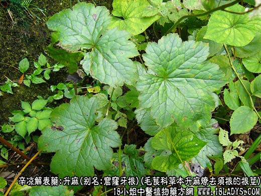
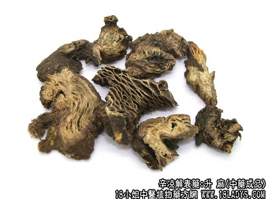
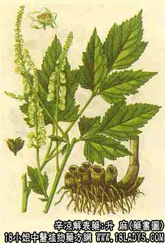

升麻为常用中药，《神农本草经》列为上品。因其叶似麻其性上升故名。
别名：窟窿牙根。
来源：为毛茛科多处生草本植物大三叶升麻、兴安升麻和升麻燎去须根的根茎。野生。
产地：主产于河北、山西、东北、内蒙古等地；四川、陕西、青海亦有产。
性状鉴别：呈不规则的结节长块状，表面黑棕色，有数个深1~2厘米的圆形空洞（茎基痕），有的带未净的细根，坚硬刺手，体轻，质坚硬，不易折断。断面黄白色或黄绿色，中空，四周成层片状。空洞周围及外皮脱落处可见网状纹理。气味苦涩。
以整齐肥大，皮黑，内色黄绿，无须根者为佳。
主要成分：兴安升麻含多种甾萜类成分及其降体温作用的升麻糖甙等。
功效与作用：解热、解毒，前人经验认为能“升提中气”，可能与兴奋平滑肌的作用有关。另临床观察认为升麻还有较好的镇痛作用。
炮制：切片生用。北京地区亦有炒炭。
性味：甘辛微寒。
归经：入肺、脾、胃经。
功能：发表、升阳、透疹解毒。
主治：风热头痛，中气下陷，斑疹不出。
临床应用：1、用于解表透疹。麻疹初起，透疹不快时用之，配葛根、牛蒡子等，方如升麻葛根汤。但要注意热盛过甚，或麻疹已透，或有呼吸迫促者均不宜用。
2、用于升阳，与益气药同用。用于治疗脱肛、子宫脱垂、中气不足、脾虚泄泻等，作用原理尚未完全明了（前人谓能升提中气），配柴胡后，升提力量较显著。方如补中益气汤。
3、用于止痛。尤其适用于头面部疼痛而偏于风热者，如治轻症头面部神经痛，配苍术、荷叶，方入清震汤。治疗胃火牙痛（牙龈炎），配葛根、石膏或黄连；又治咽喉疹痛，配玄参、桔梗、牛蒡子等。
用量：常用量2.4~9g。用量不宜过大，因本药有一定刺激性，容易引起呕吐、头晕目眩等副作用。
处方举例：1、升麻葛根汤（《阎氏小儿方论》）：升麻2.4g，葛根9g，赤芍4.5g，甘草2.4g，水煎服。
2、清震汤（刘河间）：升麻9g，荷叶1张，水煎服。
注：1、广东、福建、湖南产的一种广东升麻，为菊科植物麻花头的根。呈纺锤形，表面浅灰色，质硬而脆，易折断，具粉性，仅福建和两广使用并有少量出口。
2、甘肃、陕西、云南个别地区以虎耳草科落新妇属植物的根茎及全草作红升麻用。此外，四川产一种毛茛植物小升麻的根茎；贵州产一种菊科植物白头婆的根，称“土升麻”、“杆升麻”，均与正文所述的品种不同。药材外形差异很大，只在当地习销。